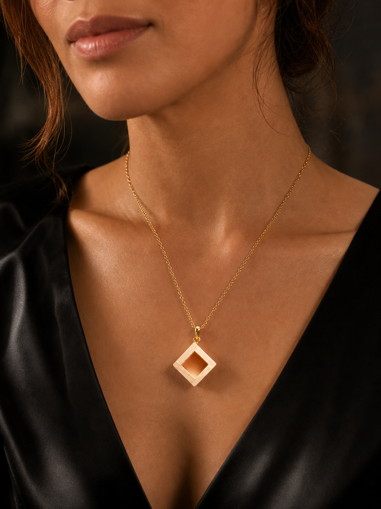

Gold Masu Necklace
Warm metal and hinoki.
InquireA miniature vessel at the center of the chest. Hinoki geometry, held close.

The flagship form of KUMIKI. Simple enough to wear daily, unusual enough to begin a conversation.
Tell us your preferred material and finish.